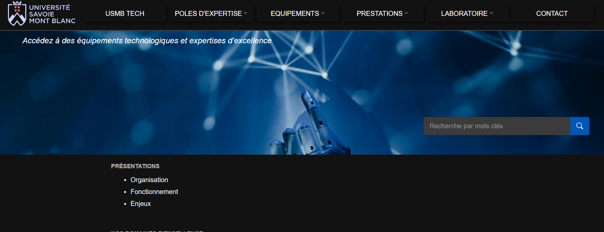
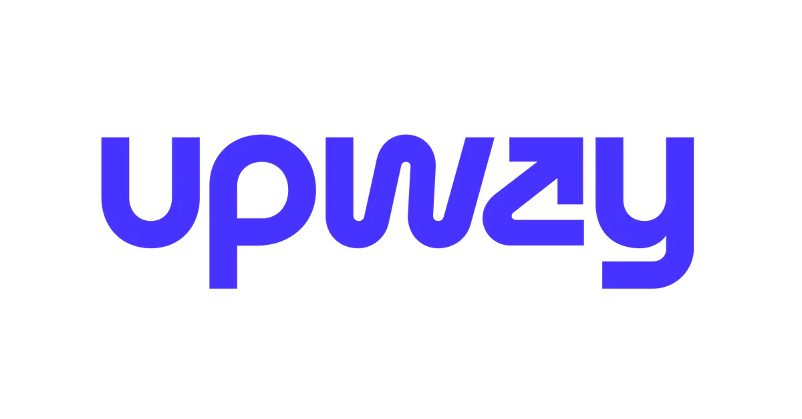

POC USMBTech (octobre 2025 - janvier 2026)
Conception d'un site permettant à des utilisateurs de réserver des prestations auprès de laboratoires spécialisés.
Environnement de conception
Missions réalisées
- Conception de l'interface utilisateur avec Blazor
- Conception de l'API Back-end et Blazor Front-end
- Conception de la base de données
- Hébergement sur Microsoft Azure
- Tests et déploiement
- Documentation
- Écoute du client
- Planification SCRUM

Uber (octobre 2024 - janvier 2025)
Conception d'un site reproduisant les fonctionnalités d'Uber Eats et Uber en groupe de 5.
Environnement de conception
- Développement d'un site web en Laravel
Missions réalisées
- Conception de l'interface utilisateur
- Conception de la base de données
- Tests et déploiement
- Documentation
- Conception d'un moyen de paiement

Upway (janvier 2025 - avril 2025)
Conception d'un site permettant de louer ou acheter des vélos en groupe de 5.
Environnement de conception
Missions réalisées
- Conception de l'interface utilisateur
- Conception de l'API Back-end et Vue.js Front-end
- Conception de la base de données
- Tests et déploiement
- Documentation